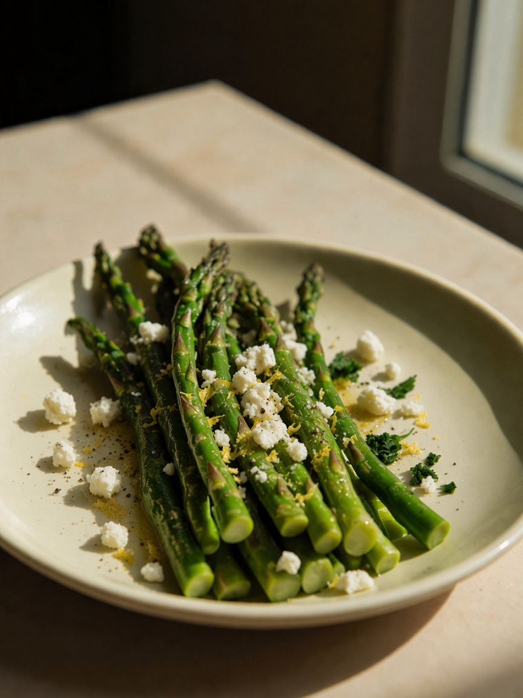
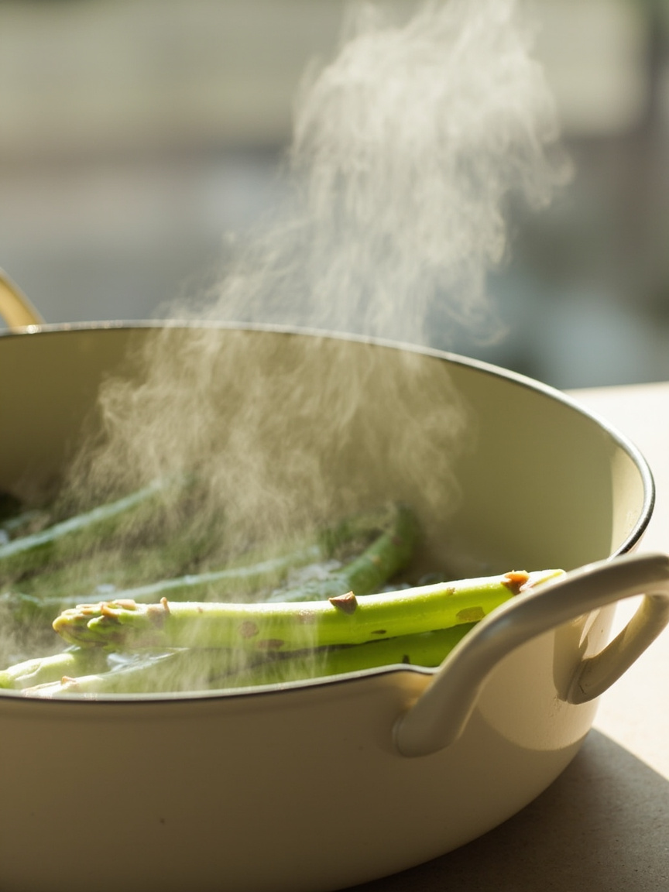
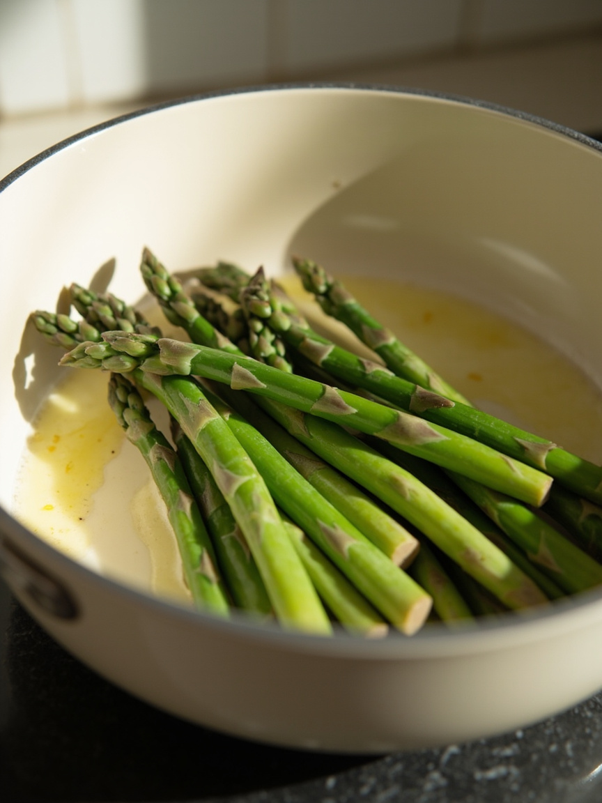
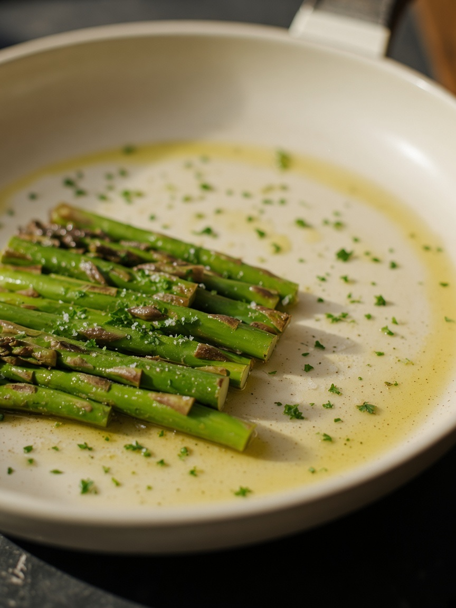
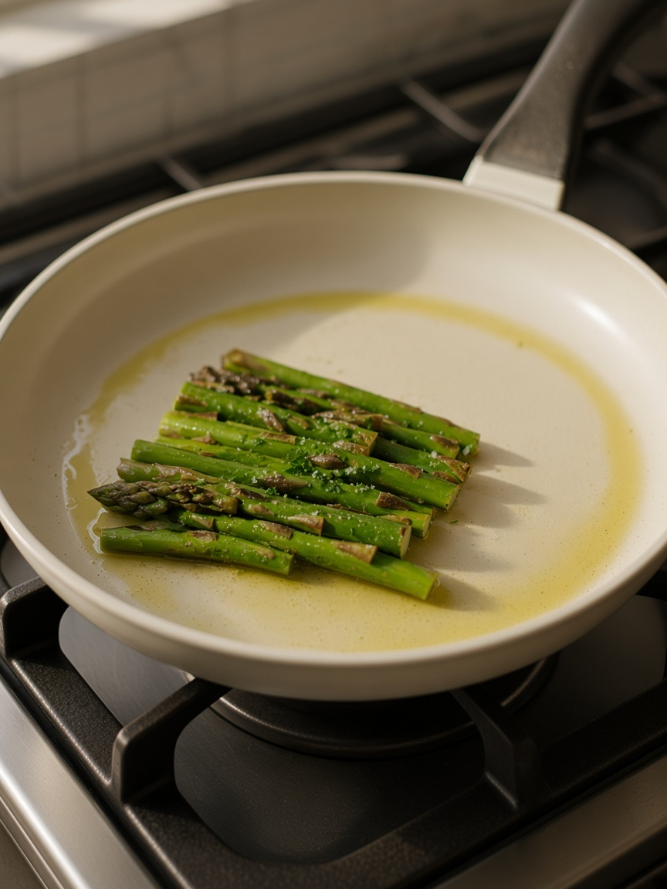
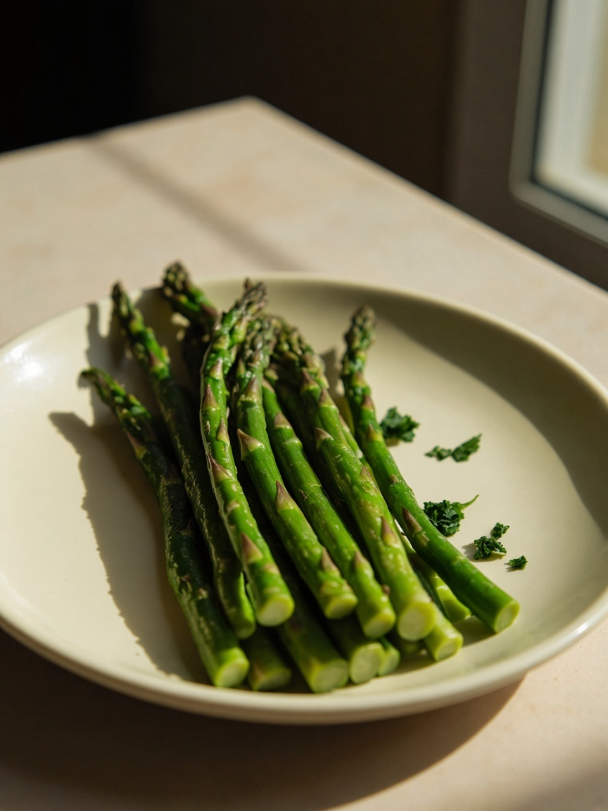
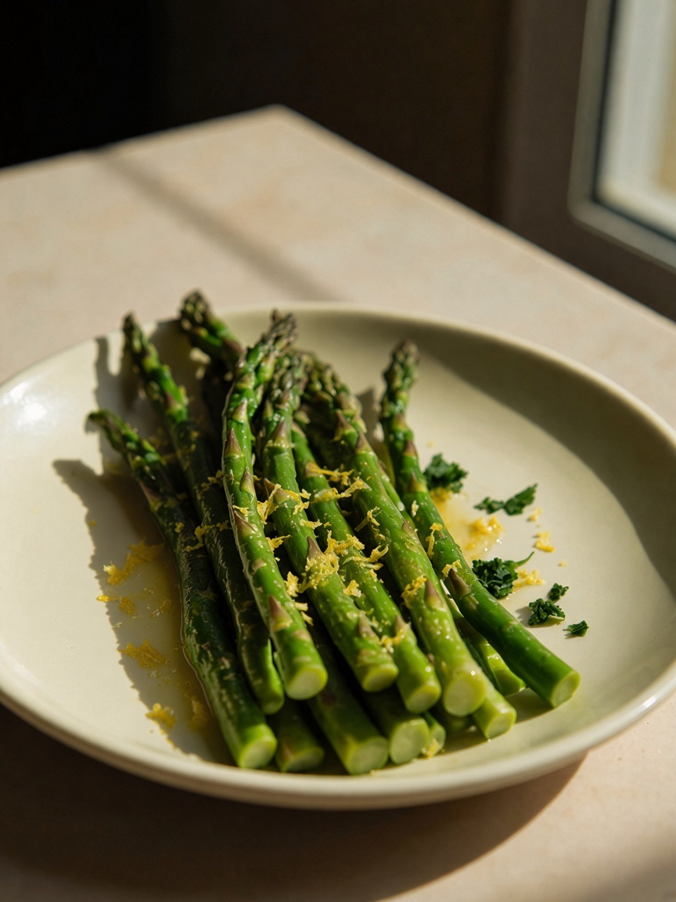

Twenty seconds in the water is enough. They should stay green and just tender.
Meditation · Cooking Meditation

Lemon Asparagus
Eat it fresh 🥡
Reheat gently 🔥
The practice begins with the preparation. Green, bright, and warm.
Shopping list
Check off what you already have. Amounts are for 1 serving. Plant-based, with no garlic or onion.
Main
Sauces & seasonings
Step 1
Wash 180g of asparagus. Blanch them for 20 seconds, then lift them out. Drain them well. Pan-fry them in 15g of olive oil for 1 to 2 minutes.


🥬180gAsparagus
🫒15gOlive oil
Step 2
Add 2g of chopped parsley and 1.2g of salt. Turn the heat off at once.


🌿2gParsley
⚪1.2gSalt
Step 3
Arrange them on the plate. Pour on 10g of lemon juice and zest. Add a little cashew cheese and a pinch of black pepper. Eat it at once.



🍋10gLemon juice and zest
🧀a pinchCashew cheese
⚫a pinchBlack pepper
Parsley and salt go in, and the heat goes off at once. The lemon waits for the plate.
Ten grams of lemon juice and zest, poured on as you plate. No garlic, onion, or scallion.
How to store it
Eat it at once. If any is left, cool it, seal it, and keep it in the fridge for one day.
How to reheat it
Warm it gently in a pan. Don't fry it again.
Nutritional information for 1 serving. A kitchen estimate, not a lab result.
Calories210 kcal
Protein5 g
| Fat | 18g |
| Saturated fat | 3g |
| Carbohydrates | 8g |
| Sugars | 3g |
| Dietary fibre | 4g |
| Sodium | 480mg |